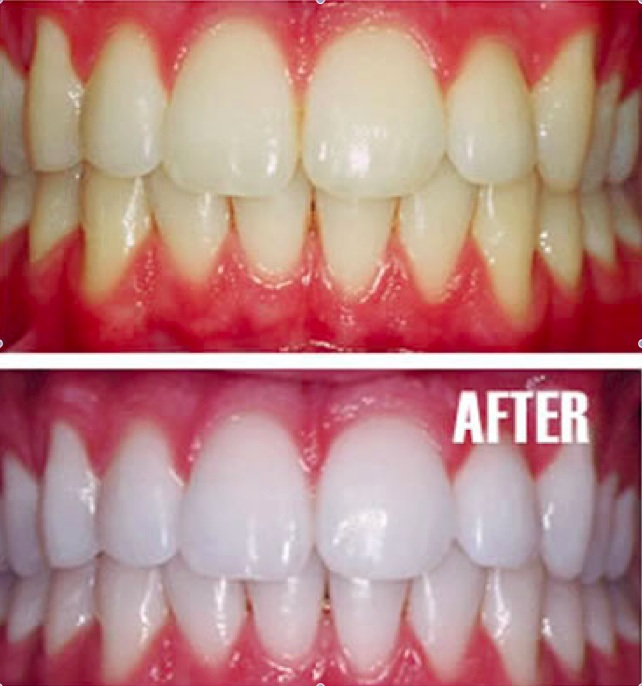

- Bleaching or Teeth Whitening will lighten teeth in around 80% cases. Teeth that tend to yellow are easiest to lighten.
- Bleaching in adults causes little, if any, discomfort.
- Bleaching live or vital teeth involves coating the outside of the teeth with a chemical solution -the oxidizing agent- and exposing them to heat or light for 20-30 minutes.
- Teeth can be bleached even if their nerves have been removed as in the case with Root Canal Therapy . In fact such teeth referred by dentists as non-vital or pulpless teeth are easier to bleach than vital teeth.One method of Bleaching these teeth involves reopening the canal which previously contained nerves, placing a bleaching solution inside and re-sealing the canal with a temporary filling. The bleaching process continues until the agent is removed and can be repeated until the satisfactory lightening takes place.
- Home bleaching also called matrix bleaching or nightguard vital bleaching, is a convenient and cost effective way.
- It involves filling a plastic tray with a bleaching solution or gel and wearing it for a few hours each day or overnight.
- Visible difference in teeth color can be seen in just a few days, though very stained teeth may require a longer time.
- Office bleaching involves application of special gel to the teeth which can be of higher concentration than the home gel.
- Requires 2-4 visits.
- The results are visible after one to two sessions.
- These days special bleaching systems using patented gels and lights can give instant results.
- In certain cases where the discoloration is more or for some deep seated stains like tetracycline, combination whitening may be required where in few session of in-office bleaching are followed up by home bleaching or vice versa.
